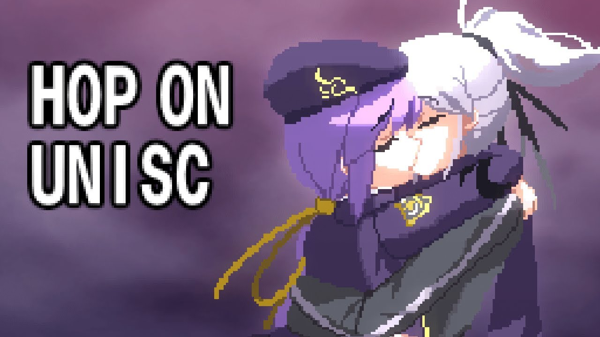

Glasses are really versatile. First, you can have glasses-wearing girls take them off and suddenly become beautiful, or have girls wearing glasses flashing those cute grins, or have girls stealing the protagonist's glasses and putting them on like, "Haha, got your glasses!' That's just way too cute! Also, boys with glasses! I really like when their glasses have that suspicious looking gleam, and it's amazing how it can look really cool or just be a joke. I really like how it can fulfill all those abstract needs. Being able to switch up the styles and colors of glasses based on your mood is a lot of fun too! It's actually so much fun! You have those half rim glasses, or the thick frame glasses, everything! It's like you're enjoying all these kinds of glasses at a buffet. I really want Luna to try some on or Marine to try some on to replace her eyepatch. We really need glasses to become a thing in hololive and start selling them for HoloComi. Don't. You. Think. We. Really. Need. To. Officially. Give. Everyone. Glasses?

Memes. The DNA of the soul. You aren't the only one to grow up on the killing fields. War is a cruel parent, but an effective teacher. Its final lesson is carved deep in my psyche: that this world, and all of its people, are diseased. Free will is a myth. Religion is a joke. We are all pawns of something even greater: memes, the DNA of the soul. They shape our will. They are the culture. They are everything we pass on. Expose someone to anger long enough, they will learn to hate. They become a carrier. Envy, greed, despair: all memes, all passed on. You can't fight nature, Jack. Wind blows, rain falls, and the strong prey upon the weak. Sam tells me you see your weapon as a "tool": something that saves lives, a means of justice. Now, there's a pretty meme! Exquisite! It spared you the burden of all the lives you've taken, absolved you of guilt when you enjoyed it.